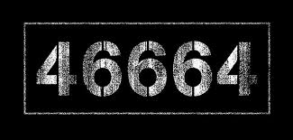
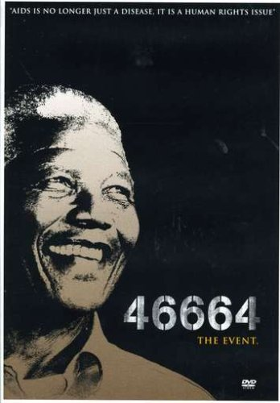

46664 è la campagna mondiale di Nelson Mandela per aiutare a sconfiggere l’HIV non solo come malattia ma anche come minaccia alla diginità e ai diritti dell'uomo.
466 era il numero di cella di Nelson Mandela per i 18 anni in cui è stato tenuto prigioniero a Robben Island, in Sud Africa; 64 corrisponde all’anno in cui è stato arrestato (1964). Durante la sua prigionia fu ridotto ad essere solo questo, un numero.
Una volta uscito di prigione nel 1990, Mandela, rafforzato nello spirito dalla sua incredibile esperienza di prigionia e lotta per la diginità umana, realizzò che doveva essere fatto di più per aiutare i milioni di persone infetti ed afflitti dall’HIV, proprio perché questi esseri umani fossero trattati come tali.
"Un problema attuale che affligge il nostro continente - ha detto Mandela - è l'Aids. Trenta milioni di persone in Africa sono attualmente affette dal virus Hiv, una sentenza di morte per le persone povere dovuta anche a una mancanza di medicine. Sin dal sorgere della malattia, una ventina di anni fa, 17 milioni di africani sono già morti".
Mandela sempre sullo stesso argomento durante una conferenza internazionale sull'Aids tenutasi nel 2004 a Parigi ha affermato:
"Una tragedia senza precedenti si sta sviluppando in Africa. Oggi, l'Aids sta portando via più vite di quante ne abbiamo avute dalla somma di tutti i morti dovuti a guerre, fame, inondazioni e a una malattia mortale come la malaria.[...] E' necessario che si agisca adesso per il bene del mondo.[...] l'Aids non è più semplicemente una malattia ma è un problema che concerne i diritti umani".
Questa malattia devastante continua a disseminare disperazione in molte parti del mondo e in particolare tra i giovani che hanno perso i genitori a causa dell’HIV o che si sono ammalati non per propria colpa e che non possono ricevere il trattamento di cui ogni essere umano ha diritto.
46664 è una campagna globale di allerta, che raccoglie denaro per la Fondazione Nelson Mandela (www.nelsonmandela.org) impegnata nella lotta contro l’HIV. La Fondazione, conosciuta nel mondo, si occupa non solo di educazione, prevenzione, sostegno e cura, ma si impegna costantemente anche per eliminare lo stigma della degradazione associato all’AIDS. Con l’aiuto della Fondazione si stanno facendo progressi soprattutto in Africa e in altri paesi nel mondo, ma i numeri purtroppo continuano a crescere e continuano a crescere le necessità e i bisogni. Molte sono ancora e cose da fare se vogliamo liberare il nostro pianeta della piaga dell’HIV.
Mandela capì che per raggiungere le centinaia di milioni di giovani nel mondo, doveva trovare un modo per comunicare con loro. Per questo Mandela ha avvicinato Dave Stewart (Eurythmics), Brian May e Roger Taylor (Queen) e Bono (U2) e ha dato loro un nome e un numero, il suo numero di cella, 46664, con l’obiettivo di utilizzare la forza della musica per raggiungere quanti più giovani possibile e, in particolare, le persone più fortunate rispetto alle decine di milioni di uomini e donne infettate e contagiate dal virus.
Alla Campagna 46664 hanno aderito molti dei leader mondiali, musicisti, attori, stelle dello sport, celebrità e politici. Oltre ai già nominati ambasciatori della 46664, Dave Steward, Bono e Queen, hanno aderito all’iniziativa umanitaria
Brad Pitt,
Will Smith,
Robert de Niro,
Charlize Theron,
Annie Lennox,
Peter Gabriel,
Sir Paul McCartney,
Beyoncé,
Anastacia,
Jimmy Cliff,
Bill Clinton,
Oprah Winfrey,
Zucchero,
Youssou N’Dour,
Angelique Kidjo,
Yusuf Islam,
Katie Melua,
Johnny Clegg,
Baaba Maal,
Bob Geldof,
The Edge,
Robert Plant,
Luis Figo,
Ronaldo,
Josh Groban,
Bongo Maffinm Mafikizolo
e tanti altri…
Durante gli ultimi 3 anni la 46664 ha portato in scena 4 concerti e grandi campagne di richiamo in Sud Africa, Norvegia e Spagna, con la presenza di una grande varietà di ambasciatori e portavoce di rilievo. I 4 concerti sono stati trasmessi attraverso TV, radio ed internet fino a raggiungere più di 2 miliardi di persone nel mondo e hanno già raccolto fondi per € 3,5 milioni per la Fondazione Nelson Mandela per la lotta all’HIV nel mondo e nell’Africa sub-sahariana.